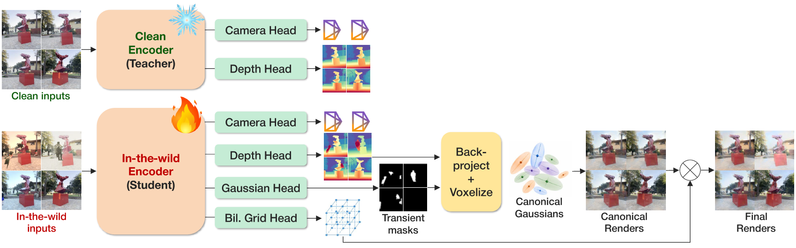

Richard Shaw,
Arthur Moreau,
Athanasios Papaioannou,
Thomas Tanay,
Zhang Zhensong,
and Eduardo Pérez-Pellitero
Huawei Noah’s Ark Lab, London, UK
We present WildAnySplat, a feed-forward 3D Gaussian Splatting framework that enables robust novel-view synthesis from in-the-wild multi-view images. Unlike controlled captures, real-world images often contain multi-view inconsistencies caused by transient occluders, illumination changes, and camera ISP, which degrade the quality of existing feed-forward reconstruction methods.
To address this challenge, we introduce a student–teacher framework that learns transient-robust and appearance-consistent 3D representations. A teacher network operates on clean images, while a student processes the corresponding in-the-wild inputs. The teacher provides clean supervision to guide the student toward a consistent canonical representation. Since paired clean and in-the-wild data are scarce, we use a hybrid data strategy, combining real paired captures, synthetic augmentations, and pseudo-clean labels generated from optimization-based reconstructions, bridging the domain gap between synthetic and real-world data.
We adopt a transformer architecture with dedicated DPT heads for camera pose, depth, and Gaussian prediction. We additionally predict per-view transient masks to reweight photometric supervision and suppress unreliable Gaussians during voxel fusion. To account for cross-view appearance variation, we incorporate a bilateral grid module that models per-image color transformations and enables recovery of a canonical radiance representation.
Experiments on challenging in-the-wild benchmarks show that WildAnySplat improves robustness to transient occlusions and appearance variation while retaining the fast inference of feed-forward Gaussian Splatting.

Drag the divider to compare the two methods.
Click a smaller result to show it above. The previous large result moves into its place.
@inproceedings{shaw2026wildanysplat,
author = {Shaw, Richard and Moreau, Arthur and Papaioannou, Athanasios and Tanay, Thomas and Zhang, Zhensong and P\'{e}rez-Pellitero, Eduardo},
title = {WildAnySplat: Feed-Forward 3D Gaussian Splatting in the Wild},
year = {2026},
isbn = {979-8-4007-2842-6/2026/12},
publisher = {Association for Computing Machinery},
address = {New York, NY, USA},
url = {https://doi.org/10.1145/3829340.3842323},
doi = {10.1145/3829340.3842323},
booktitle = {SIGGRAPH Asia 2026 Conference Papers (SA Conference Papers '26)},
location = {Kuala Lumpur, Malaysia},
numpages = {11}
}